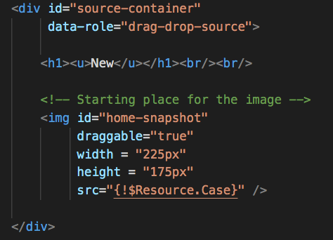
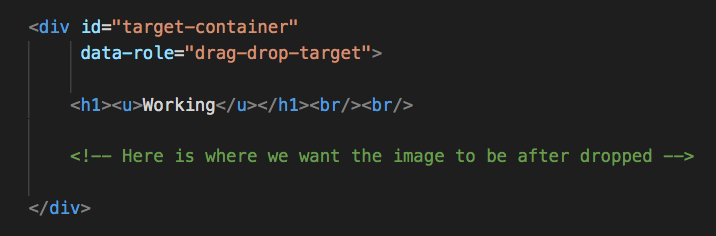

ExploringDrag and DropwithLightning Web Components
Don Robins
Topics

Sample 1: Standard HTML - UI

Draggable Source Node
Potential Drop Target Node
Another Potential Drop Target Node

Sample 2: Tightly Coupled LWC - UI

Sample 3: Loosley Coupled LWC

...and expose you to:
Software development patterns
that layer your code base
and decouple application complexity
What's NOT my goal?
To NOT brainwash you...
...and to NOT persuade you to:
Adopt any complex architectural framework
requiring you to redesign your code base
and max out your Apex code limit
What - Why - How - Where
Let's identify the problem...

MONGO
(Alex Karras)

MONGO

hu-MONGO-us
"...a fusion of HUge, MONstrous, and tremendoUS"
"...a thoughtless brute!"
So what does Mongo
have to do with Salesforce?
Mongo ~ Mondo
-mon-
Latin root
Has the meaning "warn"
Found in such words as:
admonish, monitor, monster, premonition
(not to be confused with -mono-
from the Greek root -mons- meaning
"one" found in such words as:
monarch, monotheism, monogamy)
mondo
adjective
very large or great
in amount or number
(with a hint of a warning)
mondo coding pattern
noun
programming practices where
excessive amounts of
code are haphazardly
contained in any single
programmatic construct
mondo coding pattern
noun
programming practices where
excessive amounts of
code are haphazardly
contained in any single
programmatic construct
In the programming world
mondo coding patterns
are considered an
anti-pattern
anti-pattern
noun
a commonly used
process, structure or pattern
expected to be effective
but will have unintended
consequences - and where a
better and proven way exists
anti-pattern
noun
a commonly used
process, structure or pattern
expected to be effective
but will have unintended
consequences - and where a
better and proven way exists
mondo-mania
noun
a preponderance and
ever expanding use of
mondo coding anti-patterns
Mondo-mania
runs rampant in,
and terrorizes many
Salesforce orgs
...it is "thoughtless" and "brutish"
(like Mongo)
How can you detect
mondo coding
anti-patterns
in your org?
They "smell"
(like Mongo)
code smell
noun
a characteristic of source code
suggesting a deeper problem
What are some
mondo coding anti-pattern
smells?
What are some
mondo coding anti-pattern
smells?
concern
noun
a set of information, data or logic
that effects some specific
behavior or aspect of
a software application
Where do mondo
coding anti-patterns
hide out?
Where do mondo
coding anti-patterns
hide out?
Let's sniff out some examples...
What "smells" can we find in this Class?
What "smells" can we find in this Controller Extension?
What's the solution?
CLEAN CODE
clean code
noun
code that can be understood with
little effort and in a short time
- intuitively understandable -
achieved by consciously using good
software design principles, patterns
and practices

What is one
Clean Code
design principle
that can help resolve
mondo-mania?
SoC
Separation of Concerns
separation of concerns
noun
a software design principal
of breaking down code into
distinct sections, each
addressing a specific concern

A program that embodies SoC well is called a modular program
SoC and Modularity Key Points
"The value of Separation of Concerns
is simplifying development and maintenance
of computer programs.
When concerns are well separated,
individual sections can be developed
and updated independently.
Of especial value is the ability to later
improve or modify one section of code without
having to know the details of other sections,
and without having to make corresponding
changes to those sections."
How do you implement
Separation of Concerns?
SoC
is an implementation
approach that leverages
collections of
software design patterns
(BUT it's NOT a framework!)
software framework
noun
a collection of reusable code
that implements a solution to a
common problem in software design
The fflib Apex Common Framework

Frameworks != Patterns
Frameworks implement design patterns,
but design patterns can be
implemented without a framework
(much easier)
software design pattern
noun
a reusable solution
to a common problem
in software design
What SoC
design patterns
can help resolve
mondo-mania
in Salesforce?
What SoC
design patterns
can help resolve
mondo-mania
in Salesforce?
service layer
noun
a set of available services
(sets of software functionalities)
for the application’s operations
and their responses

In Apex:
The Service Layer sets
the boundary between the
business logic concerns
(the Services)
and those of thecalling execution context
(the Clients)
execution context client
noun
Apex classes or
triggers that are the
entry points for invocation
(controller, trigger, webservice, etc.)


What does a
Service Layer
implementation
look like in Apex?
Attendee Registration Reference App


AttendeeService Class
Called From a Component Controller
@AuraEnabled
public static Attendee saveAttendee(String attendeeJSON) {
Attendee att = AttendeeService.saveAttendee(attendeeJSON);
return getAttendee(att.recordId);
}
Called From a Visualforce Controller
public PageReference saveRegistrations() {
AttendeeService.saveAttendee(this.attendee);
PageReference pr =
new PageReference('/' + this.attendee.recordId);
pr.setRedirect(true);
return pr;
}
Called From a Trigger
trigger SessionRegistration
on Session_Registration__c (before insert) {
AttendeeService.validateSessionRegistration(trigger.new);
}
What are
Service Layer benefits?
When is a Service Layer
worth the effort?
What are
Service Layer guidelines?
What about
non-Apex
services?
When you can't do what
you need in Apex...
implement your logic
as a microservice...
and host it
somewhere else
(Heroku, AWS, Azure, etc.)
microservice
noun
A loosely coupled, fine-grained
and lightweight web service
Microservice Use Case


Async Call Out

Mitigate with Mono-Purpose Microservices

Mitigate with Mono-Purpose Microservices

Mitigate with Mono-Purpose Microservices
Hungry for more?
Understanding Apex Enterprise Patterns and Separation of Concerns in Salesforce

Maximize Your Value Through
Salesforce Coding Best Practices

Adopting Trigger Design Patterns
in Existing Salesforce Orgs

Automated Code Analysis in
Salesforce - a Tools Deep Dive

Getting on the Bus - Event Based Architecture with Salesforce Platform Events

Follow the Salesforce Play By Play
series on Pluralsight and Youtube


Subscribe for a 30 Day
Unlimited Access Code
to Pluralsight.com
“You must be imaginative, strong-hearted.
You must try things that may not work, and
you must not let anyone define your limits
because of where you come from. Your only
limit is your soul..."
—Chef Auguste Gusteau, Ratatouille
"What I say is true —anyone can cook-
but only the fearless can be great.”
Remmy was the little rat who
wanted to be a great chef and
prove that "Anyone can Cook!"

Anyone can code but
only the fearless who:
Embrace Modular DevelopmentAdopt Clean Coding Practices
Avoid Anti-Patterns can be great...
So which kind of
coder are you?
Mongo
Thoughtless, smelly, dirty...
So which kind of
coder are you?

Remmy
Fearless, innovative, clean...
Next Steps:
- Visit our sponsors!
- Follow me @donrobins and on Pluralsight.com
- Keep on learning and share with your Ohana
This presentation is on Github here: